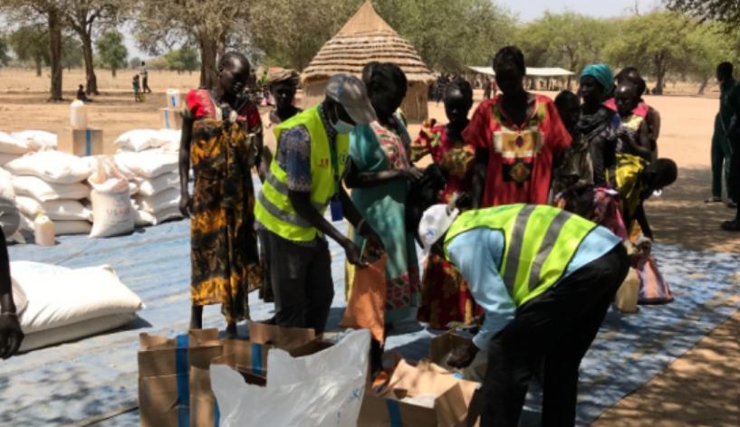

收录于合集
以下文章来源于文化纵横 ，作者于非平
 文化纵横 .
文化纵横 .
倡导文化重建，共同思想未来，发掘不一样的深度阅读。

俄乌冲突对非洲及中非合作的影响
作者： 于非平，欧亚系统科学研究会。
来源： 作者在2022年4月1日《文化纵横》杂志社和欧亚系统科学研究会主办“俄乌冲突、国际格局演变及中国的战略安全”研讨会上的发言。
导读
近日，联合国秘书长古特雷斯表示，俄乌冲突正加剧全球粮食、能源和金融三重危机，导致贫困和饥饿问题恶化。 非洲作为经济基础薄弱、粮食和能源都高度依赖进口的后发地区，无疑受到俄乌冲突的巨大冲击。 那么，真实的影响如何？对于非洲和中国又分别意味着什么？
本文指出， 俄乌冲突对非洲及中非合作产生三重影响 ：第一，对俄制裁和供应链的中断，直接推动非洲粮食、能源等大宗商品价格上涨，带来高通胀，造成营商环境和安全形势恶化，债务违约风险提高、外部融资减少。第二，这些变化导致的政治风险与汇率风险，将对中非经贸合作产生一定冲击。第三，俄乌冲突会侧面加剧大国在非洲的竞争。 尽管面临“选边站”压力，非洲国家依然有较多自主性，他们希望能维护更多合作伙伴并谋取更多利益，实用主义倾向明显。
作者认为， 非洲国家面临的各种压力与风险，将在短期内集中释放。若能成功应对，则可能迎来前所未有的重大发展机遇期。 对于中国，非洲具有多重意义，它不仅是“一带一路”的关键战略方向，也是中国在大国战略竞争中“险中求稳”最重要的基本盘。中国需要化危为机，形成合理的风险应对及中非合作模式，推动中非合作高质量发展。本文为作者在2022年4月1日《文化纵横》杂志社和欧亚系统科学研究会主办“俄乌冲突、国际格局演变及中国的战略安全”研讨会上的发言，已经作者本人审阅授权。文章仅代表作者观点，供读者参考。

▲ 图源：环球网
01
俄乌冲突强化了非洲方向的重要性
当前俄乌冲突引发的一系列外溢效应仍在持续显现。其中，两个问题值得关注。 第一个是俄乌冲突对“一带一路”建设的影响。 “一带一路”作为中国倡议的发展议程和经济合作方案，是要与共建国家（特别是发展中国家）建立互联互通伙伴关系和协同联动发展，其中就包括具有巨大潜力的非洲。 第二个问题就是制裁。 俄乌冲突前，在大的中美竞争背景下，就已经遭遇了这个问题，俄乌冲突爆发后，制裁风险明显增多、增大，这对于具有海外业务的中国企业和金融机构都产生了很大的影响。
2022年的俄乌冲突是继2008年金融危机、2020年新冠疫情后，大变局世界中的又一个标志性事件。不过，百年变局的主要矛盾没有变——中美战略竞争。 2013年，中国占美国GDP的57%；2020年，这一比重达到了70%；到了2021年，也就是一年之内，中国占美国GDP的比重就升至77%。尽管有汇率因素，但这实际上反映了经济总量变动带来的国际格局的快速变化。中国还要向价值链高端延伸，而美国遏制中国的政治诉求不会变、美国资本逐利的经济诉求也不会变。有的学者判断，现在这个阶段，中美战略竞争到了最关键的阶段，甚至有脱钩的挑战。大国战略竞争，争的是什么？一是战略资源，二是战略市场，三是战略竞争力（突出表现为货币），以及军事实力——保障资源和市场及其战略通道、维护货币的可信性。在大国战略竞争的背景下，大家感受最突出的就是风险。尽管风险总是伴随着机遇，但从整个基调看，要求我们稳字当头、稳中求进、统筹发展与安全， 要求稳住基本盘、守住阵线、防好风险。对中国而言，非洲是重要的基本盘。
俄罗斯在乌克兰的军事行动有可能会在不久的将来结束，但是美国及西方世界针对非西方国家的制裁行为（或次级制裁）不会减少，并可能成为大国战略竞争的常态化手段。在极端情况下，脱钩的挑战、出现“两个平行市场”的风险都可能大大增加， 这对建设国内大循环、国际国内双循环都将产生很大的冲击。无论是怎样的影响程度，非洲大陆这“一大片”的力量都不可缺少，对中国经济政治外交的意义也越来越重要，我们必须立足大循环、双循环，在防范和应对包括制裁在内各种风险的同时，寻找和利用与之相伴的机遇和机会。对“一带一路”建设而言，非洲是重要的战略方向。
02
俄乌冲突对非洲及中非合作产生多重影响
（一）大宗商品价格
第一个影响链条——层出不穷的制裁及供应链的中断，会推高大宗商品的价格（并且大宗商品价格特别是能源和粮食，很可能在未来若干年都处于持续波动状态），大宗商品价格高企则会带来高通胀。 非洲国家强烈依赖外部世界、外部市场和外部资金，能源、粮食等价格上涨会直接反映到其国内通胀上。
高通胀会带来两个直接后果，一是非洲营商环境和安全形势的恶化。 营商环境的变化会直接影响中国在当地的投资和工程承包，甚至贸易等经济活动。非洲的安全形势也在变得愈加复杂，尤其是各类绑架、劫持案件大幅增加，包括针对在非中国人的安全事件。 另一个后果是债务违约和外部融资缩紧。 2014年非洲就开始进入困难期，财政支出高企、负债率上升，俄乌冲突带来的对于宏观经济秩序的冲击以及高通胀连锁反应， 使得未来几年非洲的债务违约风险增大。 在G20还债倡议的48个国家中，有30多个是非洲国家；G20债务处理共同框架中，3个全是非洲国家。由于风险增大，非洲的外部融资条件也趋紧；同时，由于欧洲对乌克兰的援助增加，相应地可能会挤出一些对非洲的发展援助（包括人道主义、移民、和平安全等方面的援助）。
非洲为什么会受这么大的影响？一是因为它进口大量的小麦，特别是埃及、加纳、尼日利亚、肯尼亚等国；其次，目前的国际油价受地缘政治因素影响呈上涨态势，尽管有部分非洲国家受益于油价上涨——比如乍得、安哥拉等国的财政状况有所改善，但肯尼亚、埃及、加纳等很多国家都是石油进口国。 大宗商品价格推高通胀，带来营商环境和安全形势的变化、带来债务违约风险的提高和外部融资的减少——对中国在非洲的经贸合作带来了较大风险。 那有没有机遇呢？当然有，风险总是伴随着机遇。 比如说，在对非农业经济技术援助的同时，可以探讨援助与对非农业投资和贸易相结合，帮助非洲农产品出口、增加收入，开展农业种植领域投资合作，增强非洲农业方面的能力建设，帮助解决非洲粮食安全问题，等等。
（二）贸易与投资
俄罗斯在非洲贸易和投资中的比例都非常小，因此俄乌冲突对非洲整体贸易和投资的影响相对很小。 冷战结束后，非洲似乎从俄罗斯政策议程中消失了，尽管俄罗斯仍然将自己视为非洲解放的长期盟友。不过，近些年来，俄罗斯加大了在非存在和投入。
从贸易来看，目前俄罗斯对非洲主要出口农产品、化肥和药品（非洲每年从俄罗斯进口40亿美元农产品、从乌克兰进口29亿美元农产品），从非洲主要进口铝土矿等金属矿石。尽管俄罗斯在非洲整个贸易中占比很小，但仍有个别非洲国家由于历史和其他原因，比例还比较高，比如，马拉维与俄罗斯的贸易占该国贸易总额的8.1%，乌干达是7.2%，塞内加尔、尼日尔和刚果（布）也都有相当的比例，分别是4.4%、4.1%和4%。
从投资来看，俄罗斯在非洲吸收外来投资中的占比也很小。俄罗斯的投资主要投向自然资源领域，包括金属矿产、煤炭、油气等行业，还有在安哥拉投资钻石，在几内亚、尼日利亚投资铝土矿或氧化铝，在津巴布韦投资白金，在苏丹投资黄金，等等。
对中国而言，虽然俄乌冲突对非洲贸易和投资的影响并不太大，但带来的政治风险和汇率风险明显增大，进而会对中非合作产生影响。本来中国对非洲的经贸合作在2014年、2015年前后，就面临着比较大的转型升级的压力， 现在俄乌冲突叠加新冠疫情、供应链紧张，导致政治风险和汇率风险明显增大，这不仅对于在非基建工程企业、而且对于抗风险能力较低的中小企业，都会带来比较大的冲击，而中小企业从数量上来讲往往又是对非经贸合作的主体。
（三）地缘政治
俄乌冲突可能会强化大国在非洲的竞争。 2022年本来被俄罗斯外交政策界称为“非洲年”，因为今年要召开第二届俄非峰会，2019年在俄罗斯索契召开了第一届俄非峰会。根据此前媒体报道，第二届俄非峰会原定在埃塞俄比亚的斯亚贝巴举行，但现在其官网上说是11月初在俄罗斯圣彼得堡举行，但是否按期举行、怎么举行，目前都存在不确定性。
现在，在俄乌冲突乃至中美战略竞争的背景下，非洲国家都明显面临着选择立场的压力，不过，非洲的自主性也有明显提高。 在3月2日联合国关于谴责俄罗斯决议的投票中，非洲国家是28票赞成，17票弃权，1票反对，8个不在场。而八年前，俄罗斯“吞并”克里米亚的时候，非洲国家是26票弃权。这意味着，这次更多的非洲国家实际上投了赞成票。南非的表态非常有代表性，南非是近些年俄罗斯着重加强合作的一个重点国家。南非一方面明确表态不制裁俄罗斯，但是也认为入侵另一个主权国家，对很多国家来说都是一条红线。很多非洲国家也是这样认为的。有评论称，南非并不一定将俄罗斯视为盟友，而是将其视为可以合作的伙伴，这就是他们决定弃权的原因。总体而言， 俄罗斯在非洲采取的更多是一种实用主义乃至机会主义立场，在非洲的活动大多是交易性事务，包括在武器贸易、资源投资、雇佣兵等方面。因此，从大国在非竞争的角度看，俄罗斯在非洲更像是一种“搅局者”的角色。
从非洲来看，这里将继续成为大国竞争的舞台，各大国多样性的对非战略也会带来对非洲战略空间的挤压。非洲国家一方面选择立场的压力增大，另一方面也有相对更多的选择，因而体现出一定的实用主义乃至功利主义，希望维护更多的合作伙伴并从各方谋取更多利益。 个别国家对矿业、基建等大型项目的协议或合同进行重新审查，可能也是这种形势下的一些表现。
03
机遇与风险并存
风险总是伴随着机遇。俄乌冲突只是大变局世界中的一个事件。正如有的学者指出的， 对非洲而言，在新冠疫情、俄乌冲突等一系列冲击下，所有矛盾与困难都被压缩或集中到较短时间内释放，这意味着更大困难。但另一面是：如能成功应对，非洲大陆将迎来前所未有的重大发展机遇期。对中国而言亦是如此，既有挑战，也有机遇。 非洲是重要的战略方向，是构建新发展格局过程中不可或缺的巨大增量空间，需要我们危中寻机、化危为机，通过合理的风险应对、创新的合作模式，推动中非合作朝着高质量方向不断发展和深化。
排版 | 屈媛媛
文章为欧亚系统科学研究会编辑，文章观点不代表本平台观点。